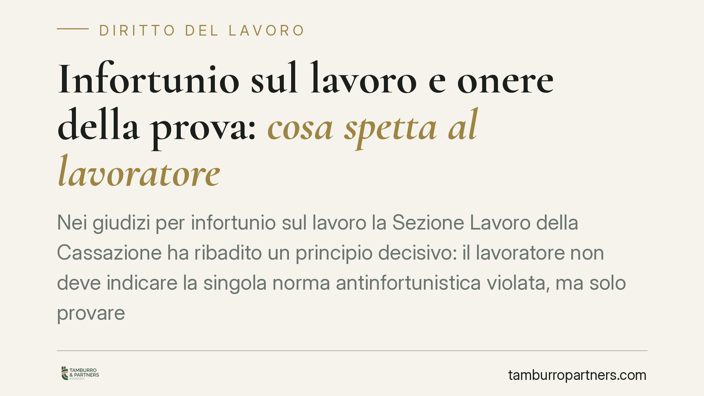

Infortunio sul lavoro e onere della prova: cosa spetta al lavoratore
Nei giudizi per infortunio sul lavoro la Sezione Lavoro della Cassazione ha ribadito un principio decisivo: il lavoratore non deve indicare la singola norma antinfortunistica violata, ma solo provare il rischio e il nesso con la lesione. Spetta al datore dimostrare di aver adottato tutte le cautele dovute. Una ripartizione che pesa molto sulla strategia difensiva di entrambe le parti.

Il principio affermato
La Sezione Lavoro della Corte di Cassazione, con una recente ordinanza, è tornata sulla distribuzione dell'onere della prova nelle controversie per infortunio sul lavoro. Il principio è netto: il lavoratore infortunato deve allegare e provare due soli elementi: l'esistenza del rischio lavorativo e il nesso causale tra quel rischio e la lesione subita.
Non è invece tenuto a individuare la specifica disposizione antinfortunistica che sarebbe stata violata. Una volta assolto questo onere, l'equilibrio probatorio si sposta sul datore di lavoro, che deve dimostrare di aver adottato tutte le misure necessarie a tutelare l'integrità del lavoratore.
*(Gli estremi dell'ordinanza vanno verificati sulla fonte ufficiale prima di qualsiasi utilizzo in sede processuale.)*
Inquadramento normativo
Il riferimento centrale è l'art. 2087 del codice civile, che impone al datore di adottare, nell'esercizio dell'impresa, le misure che «secondo la particolarità del lavoro, l'esperienza e la tecnica, sono necessarie a tutelare l'integrità fisica e la personalità morale dei prestatori di lavoro».
È una cosiddetta norma di chiusura: non elenca comportamenti specifici, ma obbliga a tutto ciò che la migliore scienza ed esperienza del momento rendono esigibile. In questo modo copre anche i rischi che la normativa di dettaglio — come il D.lgs. 81/2008 — non ha previsto in modo espresso.
La responsabilità ha natura contrattuale. Opera quindi l'art. 1218 c.c.: chi non esegue esattamente la prestazione dovuta è tenuto al risarcimento se non prova che l'inadempimento è dipeso da causa a lui non imputabile. Tradotto sul piano processuale, è il datore a dover provare la propria diligenza, non il lavoratore a dover provare la negligenza altrui.
Perché la distinzione conta
La portata pratica è rilevante. Al lavoratore basta ricostruire la dinamica dell'infortunio e dimostrare che la lesione è conseguenza di un rischio connesso alla mansione. Non deve orientarsi tra articoli e commi del Testo Unico sicurezza per indicare la norma precisa che il datore avrebbe disatteso.
Specularmente, il datore non può limitarsi a negare l'addebito: deve documentare in positivo le cautele adottate e la loro effettiva applicazione.
Qui emerge un passaggio spesso sottovalutato: non è sufficiente il rispetto formale delle misure sulla carta. Conta l'applicazione effettiva. Un documento di valutazione dei rischi completo ma mai tradotto in prassi operative, una formazione verbalizzata ma mai erogata, dispositivi consegnati ma non manutenuti: in giudizio queste discrasie pesano a sfavore del datore.
La sequenza processuale
Vale una precisazione di metodo. L'accertamento dei fatti dell'infortunio avviene nei gradi di merito (Tribunale in funzione di giudice del lavoro ed eventuale Corte d'Appello). La Cassazione, giudice di legittimità, non riesamina i fatti: verifica la corretta applicazione dei principi di diritto, tra cui proprio la ripartizione dell'onere probatorio qui richiamata. Le due funzioni vanno tenute distinte quando si legge una pronuncia.
Cosa fare in concreto
Per il datore di lavoro, la difesa si costruisce prima del contenzioso, con la gestione documentale ordinaria. In particolare:
- Tenere aggiornato il DVR (Documento di Valutazione dei Rischi) e conservarne le revisioni, così da provare la mappatura effettiva dei rischi per singola mansione.
- Archiviare i verbali di formazione e addestramento, con data, contenuti e firma dei lavoratori: la formazione non documentata, in giudizio, equivale a formazione non svolta.
- Conservare i registri di manutenzione di macchinari, impianti e attrezzature, a prova della gestione nel tempo e non solo all'origine.
- Documentare la consegna dei DPI (Dispositivi di Protezione Individuale) e la vigilanza sul loro uso effettivo.
- Verificare che le misure adottate siano concretamente operative, non solo formalizzate su supporto cartaceo o digitale.
Per il lavoratore, è utile raccogliere tempestivamente ogni elemento sulla dinamica dell'evento: documentazione sanitaria, eventuali testimoni, condizioni della postazione al momento del fatto.
In presenza di un contenzioso, in instaurazione o in resistenza, è opportuno un esame tecnico della posizione probatoria di ciascuna parte.
Contributo informativo a cura di Tamburro & Partners - Avv. Giuseppe Tamburro. Non costituisce parere legale.
Ogni storia di lavoro ha i suoi tempi.
Se gestisci HR e vuoi un confronto su contenzioso, ispezioni o licenziamenti, scrivi allo studio. Ti rispondiamo entro un giorno lavorativo.